링크 하나 붙여넣으면, 카드뉴스가 만들어집니다.
기사·블로그·Threads 링크를 넣으면 원고를 쓰고, 사진을 찾고, 템플릿에 배치해 인스타그램 캐러셀로 내보냅니다.
Windows용 무료 다운로드Claude Pro 이상 구독이 필요해요 — 원고는 내 Claude 계정으로 만들어요.
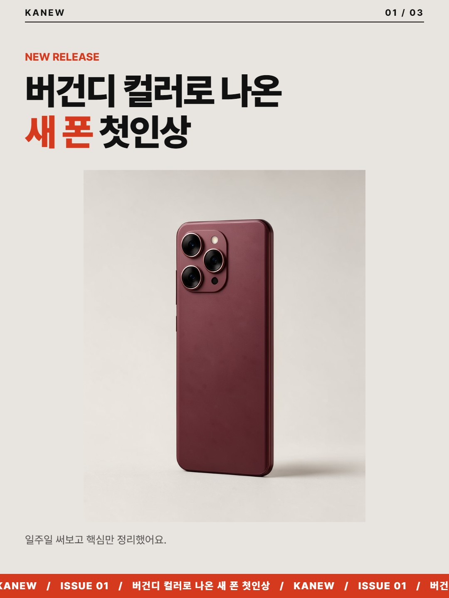
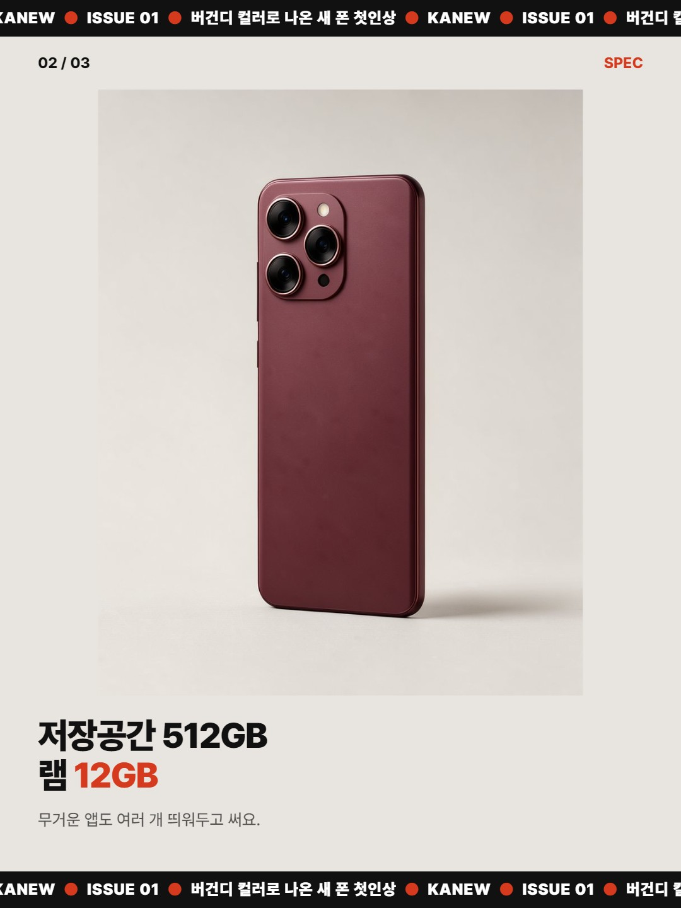
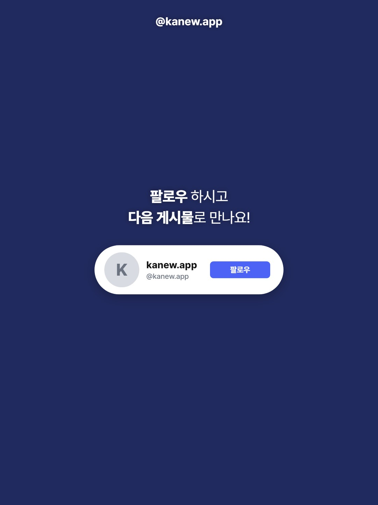
같은 원고, 템플릿만 바꿔보세요
아래 미리보기는 전부 카뉴가 직접 뽑은 결과물입니다. 템플릿을 눌러 바꿔보세요.
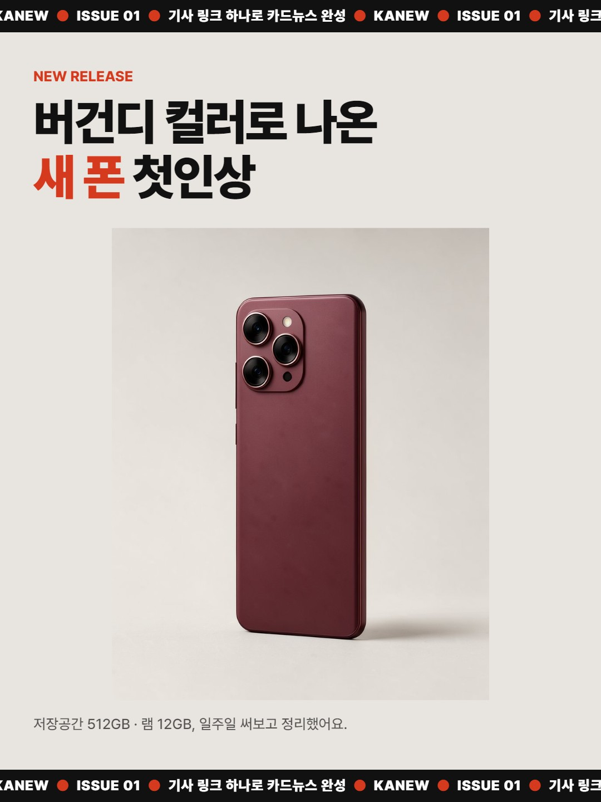
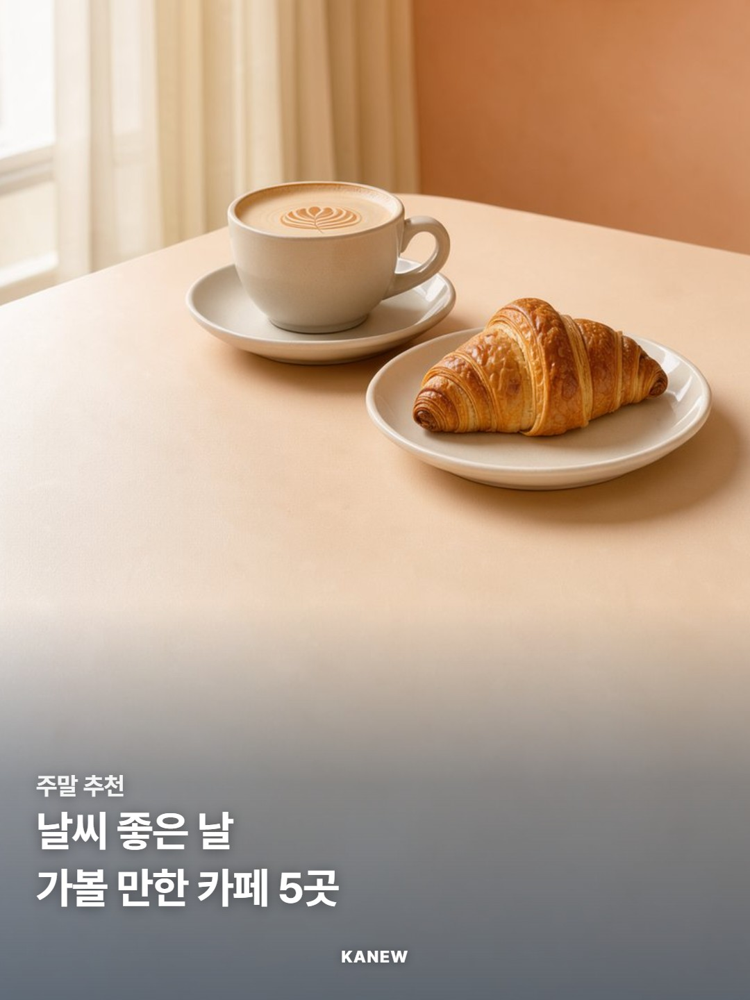
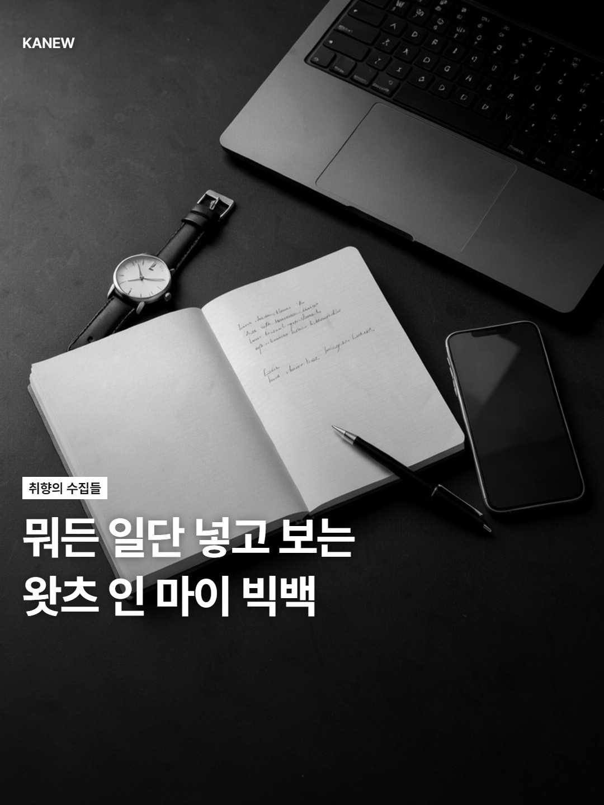
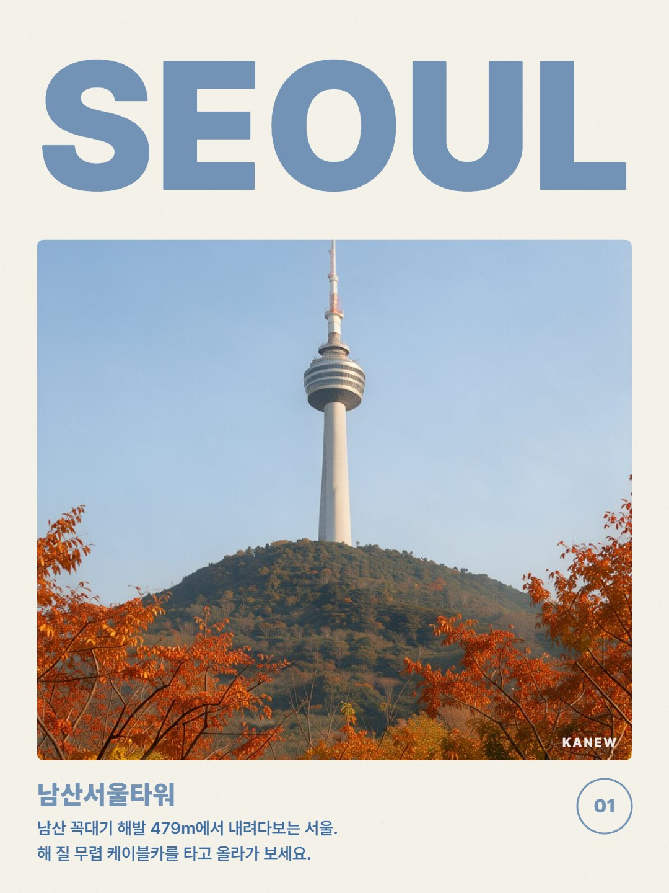
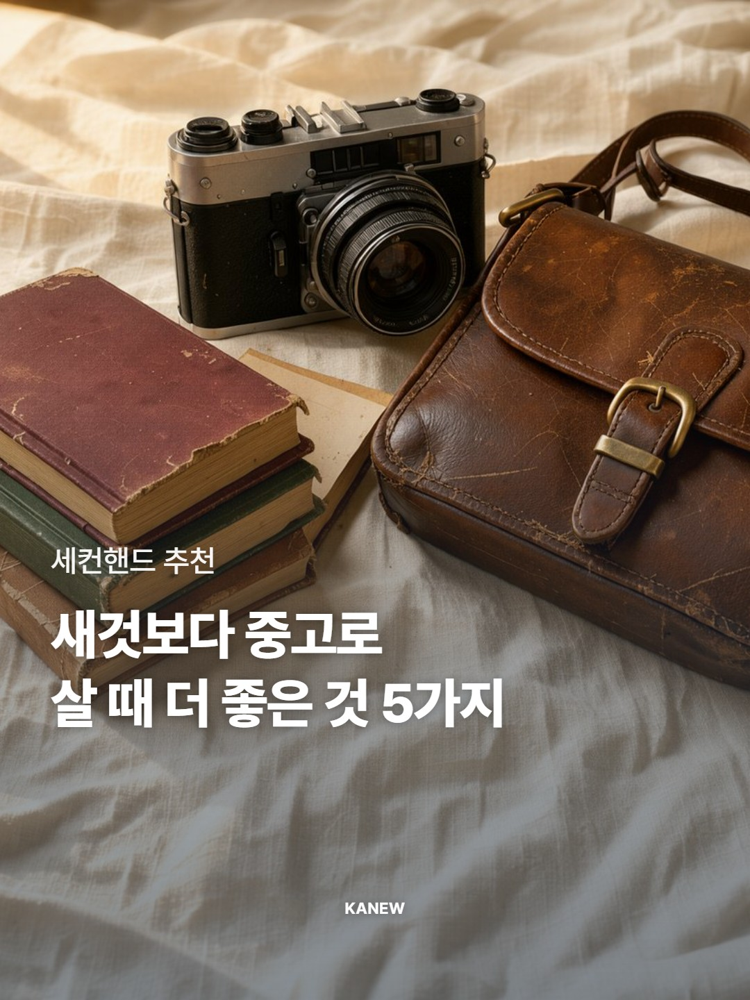
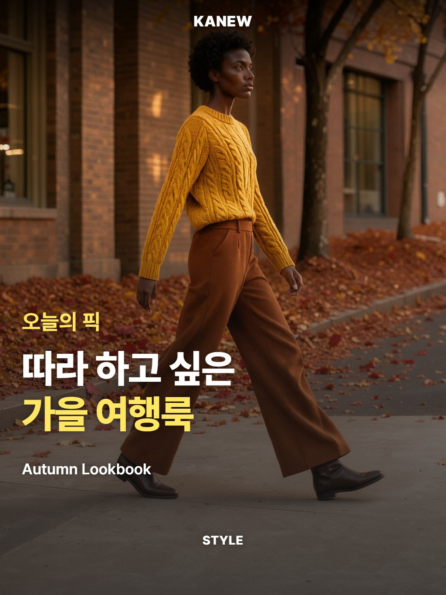
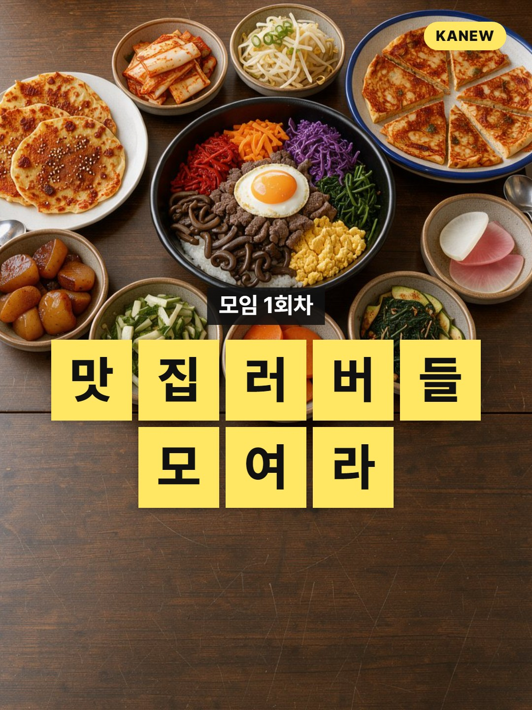
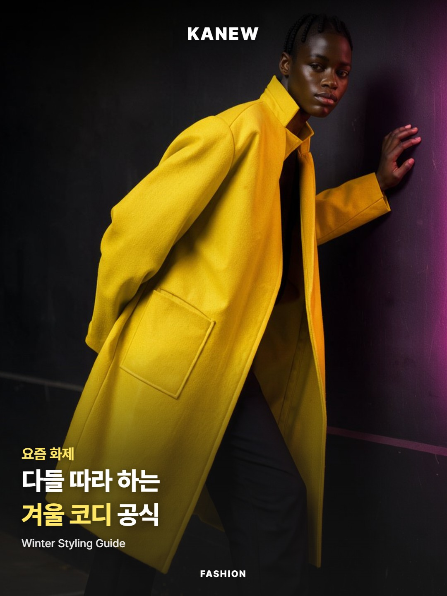
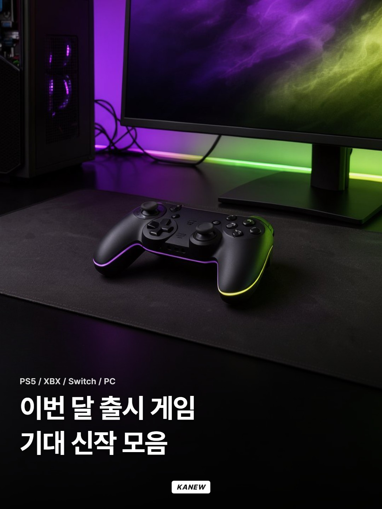
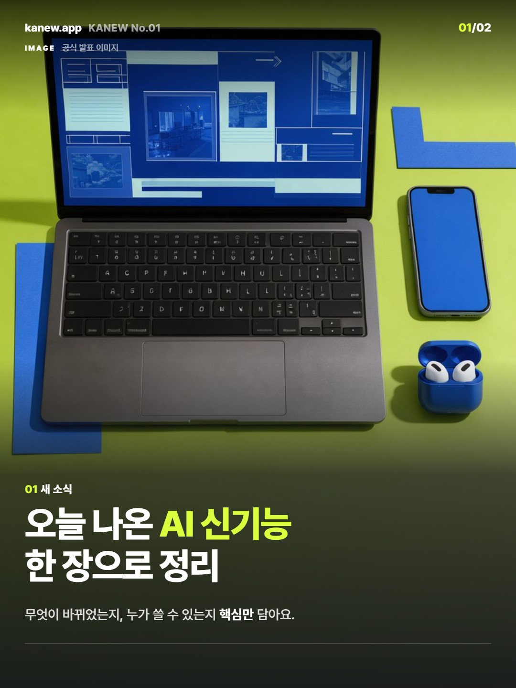
템플릿 26종 · 컬러·글꼴 바꾸기 · 직접 만든 템플릿 저장
미리보기 사진은 모두 AI(FLUX)로 만든 이미지입니다.
필요한 것
다운로드 전에 확인하세요. 카뉴는 자체 AI 서버가 없고, 내 PC의 Claude Code가 내 계정으로 원고를 씁니다.
- 운영체제
- Windows 10/11Mac은 추후
- AI
- Claude Pro 이상 구독본인 계정 · Claude Code
- AI 사용료
- 별도 없음내 구독으로 돌아감
- 설치
- 필요 없음포터블 exe
- 출력
- PNG / MP41080×1350
시작하기 3단계
-
다운로드 후 실행
원하는 폴더에 두고 더블클릭. 설치 과정이 없습니다.
-
Claude Code 설치 후 본인 Claude 계정 로그인
Pro 이상 구독이 있어야 합니다. 처음이면 Claude Code 설치 안내를 따라 하면 됩니다.
-
링크 붙여넣고 ‘원고 만들기’
기사나 스레드 링크를 넣고 버튼 하나. 템플릿 고르고 PNG/MP4로 저장하면 끝.
처음 실행 시 Windows가 ‘알 수 없는 게시자’ 경고를 띄울 수 있어요. ‘추가 정보’ → ‘실행’을 누르면 됩니다. 베타라 아직 코드 서명 전이에요.
자주 묻는 질문
- 실행하니까 Windows 경고가 떠요.
처음 실행할 때 Windows가 ‘알 수 없는 게시자’(SmartScreen) 경고를 띄울 수 있어요. ‘추가 정보’ → ‘실행’을 누르면 됩니다.
베타라 아직 코드 서명 전이라 생기는 경고예요. 정식 버전에서는 서명을 적용할 예정입니다.
- 뭐가 필요해요?
Windows PC와 Claude Pro 이상 구독. 원고는 내 PC에서 본인 Claude 계정(Claude Code)으로 만들어지기 때문에, 카뉴에 따로 내는 AI 사용료는 없습니다.
- 맥에서도 돼요?
지금은 Windows만 됩니다. macOS는 베타 반응을 보고 추후 검토할 예정이에요.
- 만든 카드의 저작권은요?
내가 만든 결과물은 내 것입니다. 카뉴는 결과물에 대해 어떤 권리도 주장하지 않아요.
다만 원본 기사의 글과 사진은 각 저작권자의 것이니, 인용 범위와 사진 출처는 게시 전에 직접 확인해 주세요.
- 모바일 앱은 없어요?
아직은 데스크톱(Windows) 앱만 있습니다. 모바일은 나중에요.